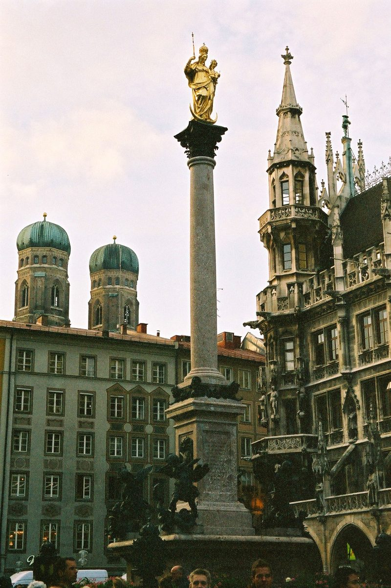

Munich: Découvrez le Marienplatz, cœur historique de la ville

Le Marienplatz est le cœur vibrant de Munich, une place historique qui incarne à la fois le charme médiéval et la modernité de la capitale bavaroise. Situé au centre de la vieille ville, il attire chaque année des millions de visiteurs. Que vous soyez passionné d'histoire, amateur d'architecture ou simplement en quête d'une expérience immersive, le Marienplatz est un incontournable.
Comment se rendre au Marienplatz ?
Le Marienplatz est facilement accessible grâce aux transports en commun de Munich. La station de métro Marienplatz est directement située sous la place, desservie par les lignes U3 et U6. Vous pouvez également prendre le S-Bahn (train régional) et descendre à la station du même nom. Pour ceux qui préfèrent marcher, la place est à quelques minutes à pied de la gare centrale de Munich (Hauptbahnhof).
Quand visiter le Marienplatz ?
Le Marienplatz est magnifique toute l'année, mais certaines périodes sont plus propices pour profiter de son ambiance unique. L'été offre des températures agréables et la possibilité de profiter des terrasses de cafés. Durant l'hiver, la place s'anime avec le marché de Noël, un véritable enchantement. Les mois de printemps et d'automne sont également idéaux pour éviter les foules tout en découvrant Munich sous ses plus beaux atours.
Les incontournables du Marienplatz
1. L'Hôtel de Ville (Neues Rathaus)
Le Neues Rathaus est l'un des bâtiments les plus impressionnants de la place. Son architecture néo-gothique en fait un véritable joyau. Ne manquez pas le Glockenspiel, un carillon animé qui enchante les visiteurs avec ses figurines historiques plusieurs fois par jour.
2. La Mariensäule (Colonne de Marie)
Érigée en 1638 pour commémorer la fin de la guerre de Trente Ans, cette colonne baroque est un symbole de gratitude envers la Vierge Marie. Elle offre également un point central pour admirer la place dans son ensemble.
3. Les magasins et boutiques
Le Marienplatz est entouré de nombreuses boutiques, des grandes enseignes aux petits commerces locaux. C'est l'endroit parfait pour acheter des souvenirs ou simplement flâner.
4. Les églises historiques
À quelques pas de la place, découvrez l'église Saint-Pierre (Peterskirche) et l'église Notre-Dame (Frauenkirche), deux édifices emblématiques de Munich.
Où manger autour du Marienplatz ?
Munich est réputée pour sa cuisine savoureuse, et le Marienplatz offre de nombreuses options pour se régaler. Dégustez une saucisse blanche (Weißwurst) avec de la moutarde et un bretzel dans l'une des brasseries traditionnelles. Pour les amateurs de pâtisserie, ne manquez pas la célèbre Café Frischut, connue pour ses délicieux beignets (Schmalznudeln). Si vous préférez une ambiance plus moderne, les cafés et restaurants autour de la place proposent des plats internationaux.
Conseils pratiques pour votre visite
Le Marienplatz est très fréquenté, surtout en été et pendant les fêtes de fin d'année. Pour profiter pleinement de votre visite, arrivez tôt le matin ou en fin d'après-midi. N'oubliez pas de porter des chaussures confortables, car les rues pavées de la vieille ville peuvent être fatigantes. Enfin, gardez un œil sur vos affaires, car les lieux touristiques attirent parfois les pickpockets.
Le Marienplatz est bien plus qu'une simple place : c'est une porte d'entrée vers l'histoire, la culture et l'énergie de Munich. Que vous y passiez quelques heures ou une journée entière, cette place vous laissera un souvenir inoubliable.
Haiktec
- Le Guide Pratique pour Enseignants et Tuteurs : Stratégies Simples pour Gagner du Temps et Améliorer les Résultats
- Suivi de Budget et Planification de Chantier pour Artisans
- 7 Histoires Enchantées pour Endormir Vos Petits Lutins
Text mit KI erstellt und automatisch geprueft.